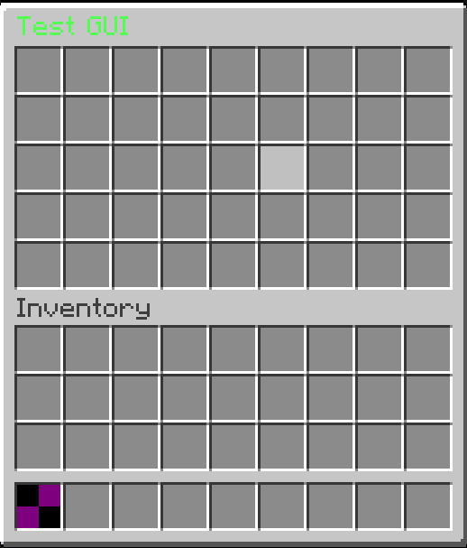

This page covers the basic concepts of creating and managing custom inventories using the GUI API. The API uses a builder pattern and predefined interactive elements instead of manual slot tracking and raw click events.
Preparing the GUI
You can create a static open(Player) method to easily open your GUI from anywhere in your code. We use Gui.builder() to define the inventory size (MenuType) and the title.
public final class TestGUI {
public static void open(Player player) {
// Create a GENERIC_9X5 GUI.
Gui.Builder builder = Gui.builder(MenuType.GENERIC_9X5, TextUtil.parse("<green>Test GUI</green>"));
GuiManager.open(player, builder.build());
}
}
We will then create an Item to open this GUI when right-clicked.
public static final Item GUI_ITEM = ITEMS.register("gui_item", id -> new Item(id) {
@Override
public ActionResult onUse(LivingEntity source, EquipmentSlot hand, ClickType type) {
if (!(source instanceof Player player)) return super.onUse(source, hand, type);
TimeGUI.open(player);
return super.onUse(source, hand, type);
}
});
Now, once you use this item in-game, the empty GUI will open.

Slot Positioning
To place items or elements inside the GUI, you need to specify their target index. AbyssalLib uses the SlotPosition class to define where an element should be placed.
Method
Information
top(int index)
Targets a slot inside the custom GUI inventory (the top section).
bottom(int index)
Targets a slot inside the player's own inventory (the bottom section).
Adding Interactive Elements
A GUI is built by placing GuiElements into specific slots. An element dictates both what item is displayed and what happens when a player clicks it.
For this example, we will add a StateCycleElement to our TimeGUI. This element takes a list of "states" and cycles to the next one each time it is clicked, running a callback function in the process.
public final class TestGUI {
public static void open(Player player) {
// Create a GENERIC_9X5 GUI.
Gui.Builder builder = Gui.builder(MenuType.GENERIC_9X5, TextUtil.parse("<green>Test GUI</green>"));
// First we get the current TimeOfDay (using our own TimeOfDay class).
long currentTime = player.getWorld().getFullTime() % 24000;
TimeOfDay day = TimeOfDay.fromTicks(currentTime);
// We now construct our states
List<StateCycleElement.State<TimeOfDay>> states = new ArrayList<>();
for (TimeOfDay tod : TimeOfDay.values()) {
states.add(new StateCycleElement.State<>(getClock(tod), tod));
}
// 3. Place the element in the exact middle of the top 9x5 GUI (Slot 22)
builder.set(SlotPosition.top(22), StateCycleElement.of(states, day.ordinal(), next -> {
// This part is called when state changes. we set world time here.
long diff = next.start - currentTime;
if (diff <= 0) {
diff += 24000;
}
player.getWorld().setFullTime(player.getWorld().getFullTime() + diff);
}));
GuiManager.open(player, builder.build());
}
private static ItemStack getClock(TimeOfDay day) {
ItemStack clock = ItemStack.of(Material.CLOCK);
clock.setData(DataComponentTypes.ITEM_NAME, Component.text("Change Time"));
clock.setData(DataComponentTypes.LORE, ItemLore.lore(
List.of(TextUtil.parse("<!i><green>Current Time: " + day))
));
return clock;
}
}
Now when you test the item in-game, clicking the clock in the center of the menu will cycle through the defined time states and update the world time.